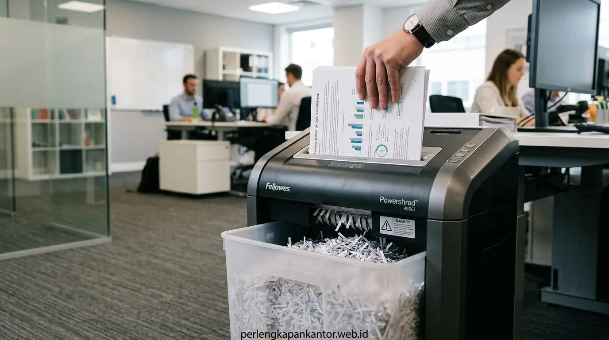

Cara Mengamankan Data Perusahaan Melalui SOP Penghancuran Dokumen Fisik
Penerapan SOP penghancuran dokumen kantor yang ketat menjamin keamanan informasi fisik perusahaan dari kebocoran data dengan pemusnahan berkas rahasia secara berkala menggunakan mesin paper shredder standar cross-cut atau micro-cut.


Implementasi SOP penghancuran dokumen fisik korporat menggunakan mesin paper shredder berstandar keamanan DIN 66399 untuk melindungi kerahasiaan data klien dan kepatuhan hukum.
- Prosedur Terstruktur: SOP penghancuran dokumen kantor mencegah kebocoran data fisik akibat pembuangan draft invoice, formulir data pelanggan, atau laporan keuangan sembarangan.
- Kepatuhan Regulasi: Mendukung pemenuhan kewajiban UU Perlindungan Data Pribadi (UU PDP No. 27/2022) dengan sanksi tegas atas kelalaian pemusnahan data rahasia.
- Standar Potongan: Pemilihan mesin shredder cross-cut (DIN P-4) atau micro-cut (DIN P-5) memastikan rekonstruksi berkas mustahil dilakukan oleh pihak tidak bertanggung jawab.
- Solusi B2B PerlengkapanKantor: Penyediaan lini mesin penghancur kertas heavy duty, bin penampungan aman, serta konsultasi alur tata kelola dokumen bisnis Anda.
- Mengapa Keamanan Informasi Fisik Dokumen Kantor Begitu Krusial?
- Bagaimana Tahapan Menyusun SOP Penghancuran Dokumen Kantor yang Efektif?
- Apa Saja Klasifikasi Dokumen dan Masa Retensi Sebelum Dihancurkan?
- Tabel Komparasi Tingkat Keamanan Mesin Penghancur Kertas (DIN 66399)
- Bagaimana Menjalankan Audit Rutin dan Memilih Paper Shredder yang Tepat?
- Pertanyaan Populer Seputar SOP Penghancuran Dokumen (FAQ)
- Kesimpulan Praktis
Mengapa Keamanan Informasi Fisik Dokumen Kantor Begitu Krusial?
Keamanan informasi fisik dokumen kantor sama pentingnya dengan keamanan siber karena satu lembar berkas berceceran dapat membocorkan rahasia dagang, strategi penawaran tender, maupun data pribadi karyawan.
Di era transformasi digital, banyak organisasi memusatkan investasi keamanan pada firewall, antivirus, dan enkripsi cloud. Namun, celah keamanan fisik (physical security vulnerability) kerap terabaikan di atas meja kerja dan tempat sampah kantor. Dokumen seperti cetakan draft kontrak kerja sama, rekam medis karyawan, slip gaji, laporan pajak, hingga memo internal sering kali berakhir di tempat sampah daur ulang tanpa proses pemusnahan yang semestinya.
Berdasarkan laporan tahunan Asosiasi Manajemen Arsip & Informasi Bisnis (ARMA International, 2025), tercatat bahwa 34% insiden kebocoran data korporat berakar dari pembuangan dokumen fisik yang tidak dihancurkan secara tuntas. Praktik pencurian data melalui tempat sampah (dumpster diving) tetap menjadi teknik spionase bisnis yang murah namun mematikan.
Selain itu, dengan diberlakukannya UU Perlindungan Data Pribadi (UU PDP No. 27/2022) di Indonesia, perusahaan yang terbukti lalai mengamankan dan memusnahkan data pribadi konsumen atau karyawan menghadapi ancaman denda administratif hingga miliaran rupiah serta sanksi pidana bagi pengambil keputusan. Oleh sebab itu, memiliki sop penghancuran dokumen kantor yang formal dan terikat menjadi sebuah keharusan operasional bagi setiap entitas bisnis modern.
Bagaimana Tahapan Menyusun SOP Penghancuran Dokumen Kantor yang Efektif?
Menyusun SOP penghancuran dokumen kantor yang efektif melibatkan 5 tahapan utama: identifikasi berkas rahasia, penunjukan penanggung jawab resmi, penetapan jadwal rutin, eksekusi pemotongan bersertifikasi, dan pengarsipan berita acara pemusnahan.
SOP yang baik tidak hanya berupa selembar instruksi kerja di dinding, melainkan alur sistematis yang dijalankan secara disiplin oleh seluruh departemen. Berikut adalah tahapan standar yang direkomendasikan oleh konsultan manajemen arsip:
- Pemilahan dan Klasifikasi Berkas (Classification): Setiap staf harus mampu membedakan antara dokumen kerja biasa (non-sensitif) dan dokumen terikat kerahasiaan (sensitif/konfidensial). Dokumen sensitif tidak boleh dibuang ke keranjang sampah umum di bawah meja.
- Penyimpanan Sementara Terkunci (Secure Holding Bins): Tempatkan wadah penyimpanan berkas berlubang slot kunci khusus di dekat ruang kerja atau area printer bersama. Berkas yang sudah tidak berlaku dimasukkan ke dalam bin ini sebelum jadwal penghancuran tiba.
- Penetapan Otorisasi dan Saksi (Authorization & Witnessing): Sebelum berkas bernilai strategis dihancurkan, manajer divisi terkait wajib menandatangani formulir persetujuan pemusnahan bersama perwakilan General Affairs atau tim kepatuhan internal.
- Proses Penghancuran On-Site (In-House Shredding): Menggunakan mesin penghancur kertas elektrik dengan spesifikasi pisau potong yang sesuai tingkat kerahasiaan dokumen di bawah pengawasan langsung petugas berwenang.
- Penerbitan Berita Acara Pemusnahan (Certificate of Destruction): Dokumentasikan volume berkas, tanggal eksekusi, nomor seri mesin yang digunakan, serta tanda tangan petugas sebagai bukti audit kepatuhan hukum dan ISO 27001.
Menurut riset B2B Office Security Outlook (Q1-2026), korporasi yang menerapkan jadwal paper shredding otomatis mingguan berhasil menghemat hingga 45% ruang penyimpanan arsip fisik sekaligus memangkas risiko klaim sengketa kebocoran informasi hingga titik terendah.
Apa Saja Klasifikasi Dokumen dan Masa Retensi Sebelum Dihancurkan?
Klasifikasi dokumen kantor dibagi menjadi empat tingkatan: Dokumen Publik, Dokumen Internal, Dokumen Rahasia (Confidential), dan Dokumen Sangat Rahasia (Top Secret) dengan masa retensi bervariasi antara 1 hingga 10 tahun.
Sebelum staf menekan tombol mesin penghancur kertas, perusahaan wajib mematuhi Jadwal Retensi Arsip (JRA) sesuai peraturan perundang-undangan perpajakan dan ketenagakerjaan di Indonesia. Menghancurkan dokumen yang masih memiliki masa pembuktian hukum aktif dapat menimbulkan implikasi hukum serius.
1. Dokumen Keuangan & Perpajakan
Faktur pajak, bukti potong, laporan audit, dan buku besar wajib disimpan minimal 5 hingga 10 tahun sesuai UU KUP. Setelah masa kedaluwarsa pajak terlewati, berkas wajib dihancurkan dengan metode cross-cut.
2. Data Karyawan & Rekrutmen (HRD)
CV pelamar yang tidak lolos seleksi harus dihancurkan maksimal 6 bulan demi privasi pelamar. Berkas karyawan purnatugas disimpan 2 hingga 3 tahun setelah pemutusan hubungan kerja sebelum dimusnahkan.
3. Dokumen Legal, Kontrak & NDA
Perjanjian kerahasiaan dagang, akta pendirian, dan kontrak rekanan memiliki retensi sesuai klausul perjanjian atau minimal 5 tahun pasca-terminasi kerja sama.
4. Catatan Harian & Draft Operasional
Catatan rapat tangan, hasil cetak yang salah (print error), dan memo harian yang memuat nomor telepon atau nama klien harus dihancurkan pada hari yang sama (kebijakan Clean Desk Policy).

Pemisahan berkas berdasarkan kategori kerahasiaan dan penyediaan fasilitas mesin pemusnah kertas di area administrasi kantor.
Tabel Komparasi Tingkat Keamanan Mesin Penghancur Kertas (DIN 66399)
Standar internasional DIN 66399 mengklasifikasikan tingkat keamanan mesin penghancur kertas dari Level P-1 hingga Level P-7 berdasarkan ukuran partikel hasil potongan limbah kertas.
Untuk memastikan SOP keamanan informasi fisik berjalan maksimal, tim pengadaan sarana kantor wajib memilih tipe mesin shredder yang tepat sesuai peruntukan departemen, seperti dijabarkan pada tabel perbandingan berikut:
| Level Keamanan | Tipe Potongan | Ukuran Partikel | Rekomendasi Berkas | Kesesuaian Departemen |
|---|---|---|---|---|
| DIN P-1 & P-2 | Strip-Cut (Potongan Garis Lurus) | Lebar pita ≤ 6 mm – 12 mm | Brosur usang, kertas coretan umum, dokumen tanpa data privat | Gudang logistik, area umum |
| DIN P-3 | Cross-Cut (Potongan Silang) | Luas partikel ≤ 320 mm² (4 x 40 mm) | Data internal perusahaan, instruksi kerja, SOP operasional | Operasional, Customer Service |
| DIN P-4 (Standar Korporat) | Cross-Cut Presisi | Luas partikel ≤ 160 mm² (4 x 38 mm) | Laporan keuangan, data gaji staf, rekam medis, faktur pajak | Finance, Accounting, HRD, Legal |
| DIN P-5 & P-6 | Micro-Cut (Partikel Mikro) | Luas partikel ≤ 30 mm² (2 x 15 mm) | Dokumen rahasia dagang, strategi merger, formulir perbankan | Board of Directors (BOD), C-Level |
| DIN P-7 | Nano / High Security | Luas partikel ≤ 5 mm² (1 x 5 mm) | Rahasia pertahanan negara, data biometrik, intelijen tinggi | Instansi militer, diplomatik |
*Catatan: PerlengkapanKantor menyediakan lini mesin penghancur kertas DIN P-4 dan P-5 yang telah dilengkapi sensor anti-jam otomatis, kemampuan mencacah kartu kredit plastik, CD/DVD, dan klip staples baja ringan.
Bagaimana Menjalankan Audit Rutin dan Memilih Paper Shredder yang Tepat?
Menjalankan audit rutin dilakukan melalui pengecekan kebersihan meja kerja berkala (clean desk audit) dan memastikan kapasitas kerja mesin shredder sebanding dengan volume lembar limbah harian kantor Anda.
Untuk menjaga agar SOP penghancuran dokumen kantor tidak menjadi formalitas belaka, tim manajemen perlu menerapkan langkah-langkah pemantauan berkelanjutan berikut:
- Clean Desk Policy Audit: Lakukan inspeksi berkala di akhir jam kerja. Meja staf tidak boleh meninggalkan dokumen cetak berkategori sensitif dalam keadaan terbuka.
- Perhatikan Sheet Capacity & Duty Cycle: Pilih mesin penghancur kertas yang memiliki kapasitas potong minimal 15-20 lembar per siklus masukan (sheet capacity) dengan continuous run-time minimal 30-60 menit agar tidak cepat mengalami overheating saat proses pemusnahan massal.
- Perawatan Berkala Pisau Pemotong: Berikan pelumas khusus (shredder oil sheet) secara periodik untuk mencegah penumpukan serbuk kertas yang dapat membuat motor penggerak tersendat.
- Kemitraan Pengadaan B2B Terpercaya: Bekerja sama dengan penyedia perlengkapan kantor yang memiliki stok unit lengkap, ketersediaan suku cadang, serta jaminan purnajual terpercaya.
PerlengkapanKantor siap menjadi mitra strategis korporasi Anda dalam merancang sistem pengamanan berkas fisik terpadu. Kami menghadirkan aneka pilihan mesin penghancur kertas GBC, Aurora, dan merk premium lainnya dengan penawaran harga grosir B2B terbaik di Indonesia.
Pertanyaan Populer Seputar SOP Penghancuran Dokumen (FAQ)
Kesimpulan Praktis
Mengamankan data rahasia perusahaan memerlukan perpaduan antara SOP penghancuran dokumen kantor yang disiplin dan perangkat mesin paper shredder berstandar industri. Lindungi reputasi bisnis Anda dari ancaman kebocoran informasi dan denda regulasi sekarang juga bersama solusi teknologi perkantoran terpercaya dari PerlengkapanKantor.
Penulis: Tim Spesialis Perlengkapan Kantor
Divisi Riset Teknologi Perkantoran & Tata Kelola Arsip di PerlengkapanKantor. Berpengalaman dalam mendampingi ratusan perusahaan merancang sistem pengadaan ATK efisien, fasilitas kerja ergonomis, dan keamanan dokumen korporat di Indonesia.